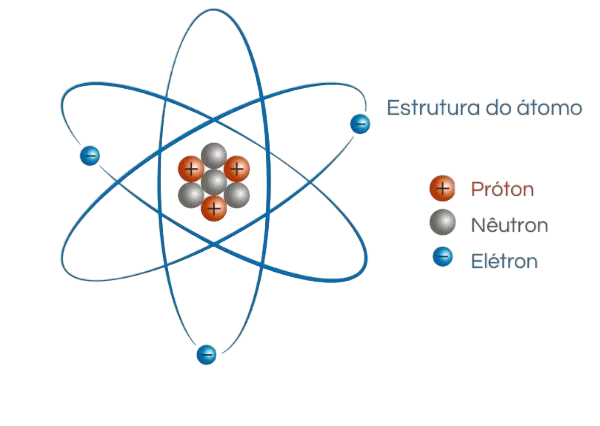

<!DOCTYPE html>
<html lang="en">
<head>
    <meta charset="UTF-8">
    <meta name="viewport" content="width=device-width, initial-scale=1.0">
    <title>Document</title>
    <link href="https://cdn.jsdelivr.net/npm/bootstrap@5.3.3/dist/css/bootstrap.min.css" 
    rel="stylesheet" 
    integrity="sha384-QWTKZyjpPEjISv5WaRU9OFeRpok6YctnYmDr5pNlyT2bRjXh0JMhjY6hW+ALEwIH" 
    crossorigin="anonymous">
    <style>
    #Lib{
        font-family: 'Franklin Gothic Medium', 'Arial Narrow', Arial, sans-serif;
        margin-left: 4%;
        margin-right: 4%;
        margin-top: 40px;
        color: #00c7a6;
        width: 92%;
        border-bottom: 3px solid #00c7a6; }

        #textb{
        margin-right: 4%;
        margin-left: 4%;
        font-family: 'Franklin Gothic Medium', 'Arial Narrow', Arial, sans-serif;
        font-size: 17px; }

        .Expl{
            margin-top: -10px;
            margin-left: 4%;
            margin-right: 4%;
            font-family: 'Franklin Gothic Medium', 'Arial Narrow', Arial, sans-serif;
            font-size: 1.1rem;
            color: white;
        }
        #Atp{
        font-family: 'Franklin Gothic Medium', 'Arial Narrow', Arial, sans-serif;
        margin-right: 4%;
        margin-left: 4%;
        margin-top: 20px;
        color: #00c7a6;
        width: 90%;
        font-size: 1.8rem;
        }

        #EstAtomo{
            margin-left: 20px;
            margin-top: 10px;
        }
        .barInf{
          background-color: white;
          font-family: 'Trebuchet MS', 'Lucida Sans Unicode', 'Lucida Grande', 'Lucida Sans', Arial, sans-serif;
          font-size: 1.2rem;
          height: 20%;
          padding-top: 4.5%;
          
        }
        .txtbarInfo{
          padding-left: 6%;
        }
        #body{
          background-color: #0d183a;
        }
        #JH {
    background-color: rgb(255, 255, 255);
    height: 56px;

}

#bRes {
    background-color: rgb(249, 249, 249);
    height: 5.2rem;
    display: block;
    padding-top: 1.2rem;
}

@media (min-width: 991px) {
    #bRes {
        display: none;
    }
}

@media (max-width: 284px) {
    #bRes {
        height: 5.94rem;
    }
}
        
        
    </style>
</head>
<body id="body">

</html><style src="index.js"></style>
<nav class="navbar navbar-expand-lg bg-body-tertiary navig">
  <div class="container-fluid" id="JH">
    <a class="navbar-brand" style="font-family: 'Gill Sans', 'Gill Sans MT', Calibri, 'Trebuchet MS', sans-serif;"> Terminologia  Química </a>
    </button>
    <div class="collapse navbar-collapse" id="navbarScroll">
      <ul class="navbar-nav me-auto my-2 my-lg-0 navbar-nav-scroll" style="--bs-scroll-height: 100px;">
        <li class="nav-item"> 
          <a class="nav-link active" id="menu" aria-current="page" href="index.html"> Menu </a>
        </li>
        <li class="nav-item">
          <a class="nav-link" id="libr" style="color: rgb(51, 51, 51); cursor: default;" href="Dicionário.html"> Dicionário </a>
        </li>
        <li class="nav-item dropdown">
          <a class="nav-link" href="tabel-periodica.html" role="button" data-bs-toggle="dropdown" aria-expanded="false">
            Tabela Periódica
          </a>
          <ul class="dropdown-menu">
            <li><a class="dropdown-item" href="#">Action</a></li>
            <li><a class="dropdown-item" href="#">Another action</a></li>
            <li><hr class="dropdown-divider"></li>
            <li><a class="dropdown-item" href="#">Something else here</a></li>
          </ul>
        </li>
        <li class="nav-item">
          <a class="nav-link disabled" aria-disabled="true">Link</a>
        </li>
      </ul>
      <form class="d-flex" role="search">
        <input class="form-control me-2" type="search" placeholder="Search" aria-label="Search">
        <button class="btn btn-outline-success" type="submit">Search</button>
      </form>
    </div>
  </div>
</nav>
<div id="bRes" >
  <center>
  <table>
    <tr>
      <div>
      <button style="background: none; border: none;">  Menu </button>
      <button style="background: none; border: none;"> <a href="Dicionário.html" style="text-decoration: none; color: rgb(99, 99, 99);">  Dicionário </a></button>
      <button style="background: none; border: none;"> <a href="tabel-periodica.html" style="text-decoration: none; color: rgb(99, 99, 99);">  Tabela Periódica </a> </button>
      
    </div>
    </tr>
  </table>
</center>
</div>

<h2 id="Lib"> Átomo </h2> 
    <p class="Expl"> O átomo é a partícula fundamental que compõe a matéria. </p>
    <p id="Atp"> Introdução aos Átomos   </p>
    <p class="Expl"> Átomo é a partícula que constitui a matéria, sendo assim, tudo que tem massa e volume é constituído por átomos. <br> 
      O nome átomo vem do grego "A" (não) e "tomos" (divisão). Este nome foi dado por Demócrito, pois naquele tempo, acreditava-se que o átomo não era divisível, mas não é bem assim. Você verá mais pra fente a história do átomo, mas agora vamos ver sua estrutura.
    </p>
    <p id="Atp"> Estrutura </p>
    <p class="Expl"> O átomo é constituído por 1 núcleo e uma eletrosfera. No núcleo estão os prótons e os neutrons, e na eletrosfera estão os elétrons. <br>
      Os prótons tem carga positiva, os neutrons, como o nome indica, são nêutrons. Eles estão localizados no núcleo do átomo, e são menores que ele. E agora os elétrons, que possuem carga negativa e estão localizados na eletrosfera. Veja a representação na imagem abaixo. </p>

    

    <p id="Atp"> Estrutura da Eletrosfera </p>

    <p class="Expl"> A estrutura da eletrosfera é composta por camadas que são nomeadas com letras do alfabeto, e cada uma tem uma capacidade máxima de elétrons.</p>
    
    
    <p class="Expl"> K: até 2 elétrons <br>
        L: até 8 elétrons <br>
        M: até 18 elétrons <br>
        N: até 32 elétrons <br>
        O: até 50 elétrons <br>
        P: até 72 elétrons <br>
        Q: até 98 elétrons </p>

    <p id="Atp"> Identificação dos Átomos </p>
    <p class="Expl"> Os átomos são muito pequenos para serem vistos com nossos olho. Então para podermos identificá-lo, nos devemos observar qual é seu número atômico(Z). E isso é fácil, apenas observe o número de prótons, a quantidade que houver, é o número atômico. Por exemplo, o oxigênio tem 8 prótons, sendo assim, o número atômico dele é 8. </p> 
    <p id="Atp"> Fórmulas Matemáticas</p>
    <p class="Expl"> Para calcular seu número de massa, usamos a seguite conta: </p>
    <p class="Expl" style="font-family: 'Courier New', Courier, monospace; font-size: 20px;"> <b> A = n + p </b> </p>
    <p class="Expl" style="border-bottom: 2px solid;"> Nesta conta, "A" é número de massa, "n" é nêutron e "p" é próton. </p>
    <br>
    <p class="Expl"> Para calcular o número de prótons, usamos outra conta:</p>
    <p class="Expl" style="font-family: 'Courier New', Courier, monospace; font-size: 20px;  border-bottom: 2px solid;"> <b> P = A - n </b> </p> <br>

    <p class="Expl"> E para calcular o número de nêutrons, usamos mais uma conta:</p>
    <p class="Expl" style="font-family: 'Courier New', Courier, monospace; font-size: 20px;"> <b> N = A - Z </b> </p> <br>

    <p id="Atp"> Cientistas </p>
    <p class="Expl"> Agora vamos ver os cientistas e químicos que fizeram parte da história do átomo.

    <p id="Atp"> Demócrito e Leucipo </p>
     <br> <br>
    <p class="Expl">
      Os primeiros a propor a ideia do átomo foram os filósofos gregos Demócrito e Leucipo no século V a.C. Eles acreditavam que a matéria era composta de partículas indivisíveis chamadas “átomos” (do grego “a-tomos”, que significa “indivisível”). Para eles, os átomos eram eternos, imutáveis e variavam em forma e tamanho</p>
    <p id="Atp"> John Dalton </p>
     <br> <br>
    <p id="Atp"> Modelo de Dalton </p>
    <p class="Expl">
      <br> No início do século XIX, o químico inglês John Dalton desenvolveu a primeira teoria atômica moderna. Dalton propôs que cada elemento químico era composto por um tipo único de átomo, que eram esferas maciças e indivisíveis, esse modelo hoje tem o nome de bola de bilhar, pois era muito semelhante. Ele também sugeriu que os átomos de diferentes elementos poderiam se combinar em proporções fixas para formar compostos.
      </p>
      
      <p id="Atp"> J.J Thomson</p>
       <br> <br>
      <p id="Atp"> Modelo de J.J Thomson </p>
      <p class="Expl"> Em 1897, o físico britânico J.J. Thomson descobriu o elétron, uma partícula subatômica carregada negativamente. Ele propôs o modelo do “pudim de passas”, onde os elétrons estavam embutidos em uma esfera positiva, semelhante a passas em um pudim.
        </p>

        <p id="Atp"> Ernest Rutherford </p>
         <br> <br>
        <p id="Atp"> Modelo de Rutherford </p>
        <p class="Expl"> Em 1913, o físico dinamarquês Niels Bohr refinou o modelo de Rutherford, sugerindo que os elétrons orbitavam o núcleo em níveis de energia definidos. Quando um elétron mudava de nível, ele emitia ou absorvia uma quantidade específica de energia, explicando assim os espectros de emissão dos átomos.
          </p>

                  <p id="Atp"> Niels Bohr</p>
         <br> <br>
        <p id="Atp"> Modelo de Bohr </p>
        <p class="Expl"> Em 1913, o físico dinamarquês Niels Bohr refinou o modelo de Rutherford, sugerindo que os elétrons orbitavam o núcleo em níveis de energia definidos. Quando um elétron mudava de nível, ele emitia ou absorvia uma quantidade específica de energia, explicando assim os espectros de emissão dos átomos.
          </p>
          <br><br><br><br><br>
          <nav class="barInf"><p class="txtbarInfo"> Este site foi feito por alunos da <b> Etec Elias Nechar, </b> <br> Mas
            Alguns textos foram feitos por IA, e outros foram tirados de sites como <a href="https://mundoeducacao.uol.com.br/"> Mundo Educação </a> e <a href="https://www.todamateria.com.br/"> Toda Matéria </a> <br> <br> 
            Viu algo com erro? Entre em contato. <br>
          heitor.cangussu@etec.sp.gov.br <br>  joao.almeida332@etec.sp.gov.br </p>
           <br>
          
          </nav>
          <div vw class="enabled">
            <div vw-access-button class="active"></div>
            <div vw-plugin-wrapper>
              <div class="vw-plugin-top-wrapper"></div>
            </div>
          </div>
          <script src="https://vlibras.gov.br/app/vlibras-plugin.js"></script>
          <script>
            new window.VLibras.Widget('https://vlibras.gov.br/app');
          </script>
        
</body>
</html>